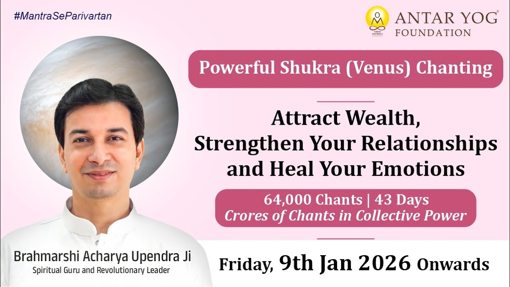

किसी को सब सहज, किसी को कुछ भी नहीं?
कुछ लोगों के जीवन में प्रेम, धन, सौभाग्य, सौंदर्य और कलात्मकता जैसे अपने-आप चले आते हैं। उनके चेहरे पर एक अनोखी आभा होती है।
और कुछ लोग कितनी भी मेहनत कर लें, रिश्तों में मिठास, आर्थिक स्थिरता या अच्छा जीवनसाथी मिलता ही नहीं। इसका कारण है शुक्र। जीवन में यह सब तभी आता है जब आपका शुक्र जागृत और शुभ होता है।
प्रबल शुक्र क्या देता है?
शास्त्र कहते हैं कि जहाँ शुक्र प्रबल होता है, वहाँ प्रेम स्थिर होता है, विवाह सफल होता है और व्यक्तित्व निखरता है। संतान सुख मिलता है और लक्ष्मी सहजता से आती है।
पर जब शुक्र कमज़ोर या दोषग्रस्त हो, तो संबंधों में मतभेद, विवाह में बाधाएँ, आर्थिक हानि, व्यसन, व्यवसाय में अस्थिरता और कला में अरुचि दिखने लगती है।
क्या आपके जीवन में भी इनमें से कोई क्षेत्र बार-बार अटकता है?
आपका लैपटॉप भी शुक्र है
आचार्य जी बताते हैं कि शुक्र (Venus) एक राजसिक ग्रह है, यानी भोग, सुख और सक्रियता से जुड़ा। सामान्य रूप से स्त्रियाँ, उनके वस्त्र और फ़ैशन शुक्र के अंतर्गत आते हैं। साथ ही इलेक्ट्रॉनिक वस्तुएँ, संगणक और लैपटॉप भी।
सोचिए, बड़ा प्रस्तुतीकरण है और लैपटॉप बीच में अचानक बंद हो जाता है। आचार्य जी कहते हैं कि वह लैपटॉप शुक्र था, जो दिखने में जड़ लग रहा था। अगर आप पत्नी को धोखा देते हैं, तो मानो लैपटॉप कहता है कि वह आपके महत्वपूर्ण प्रस्तुतीकरण में धोखा देगा।
सभी तकनीकी उपकरण, विलासिता की वस्तुएँ, स्वच्छ स्थान और फ़ैशन की चीज़ें, ये सब शुक्र हैं। यह कैसे काम करता है, यह आचार्य जी साधना में सिखाते हैं।
जिन चीज़ों को आप जड़ समझते हैं, क्या वे भी आपके कर्मों का उत्तर दे रही हैं?
सामूहिक जप की शक्ति
अंतर्योग फाउंडेशन के संस्थापक, ब्रह्मर्षि आचार्य उपेंद्र जी के सान्निध्य में पहली बार शुक्र ग्रह जप साधना ऑनलाइन हो रही है। बीज मंत्र (किसी देवता या ग्रह का मूल ध्वनि-मंत्र) का यह जप घर बैठे किया जाता है।
जब हज़ारों साधक एक ही समय पर जप करते हैं, तो करोड़ों मंत्रों की ऊर्जा दिव्य तरंगों में बदलकर जीवन को सौभाग्य, प्रेम और समृद्धि से आलोकित करती है।
आचार्य जी कहते हैं कि जहाँ समस्या है, वहाँ समाधान भी अवश्य है।
इस वैश्विक अनुष्ठान में प्रत्येक साधक 43 दिनों में 64,000 वैयक्तिक और करोड़ों सामूहिक मंत्र जप करता है, साथ में विशेष ज्ञान सत्र भी होता है। आचार्य जी स्वयं 5 लाख से अधिक नवग्रह मंत्रों का जप, यज्ञ और अभिषेक कर चुके हैं।
मुख्य बातें
- प्रेम, विवाह, धन, सौंदर्य और कला का कारक शुक्र है।
- दोषग्रस्त शुक्र संबंधों में मतभेद, आर्थिक हानि और व्यसन लाता है।
- शुक्र राजसिक है: स्त्रियाँ, फ़ैशन, इलेक्ट्रॉनिक उपकरण और विलासिता की वस्तुएँ इसके अंतर्गत आती हैं।
- संबंधों में धोखा शुक्र से जुड़ी चीज़ों में भी धोखे के रूप में लौट सकता है।
- 43 दिनों की सामूहिक शुक्र बीज मंत्र साधना से प्रेम, आभा और समृद्धि को जागृत किया जा सकता है।

आगे पढ़ें
कुछ कृपाएँ ऐसी होती हैं जिनके बिना कोई कार्य सफल नहीं होता। जिनके रुष्ट होने से जन्मपत्रिका के शुभ योग भी निष्फल हो जाते हैं, और जिनके आशीर्वाद से…
क्या आपने कभी सोचा है कि जीवन में जो चीजें आपको रोकती हैं, वे शायद आपको आगे बढ़ाने के लिए ही हैं? आचार्य उपेंद्र जी इस प्रवचन में एक साधारण से प्रश्न…

आपका ध्येय क्या है? आपका लक्ष्य कितना बड़ा है? संसार चलाना है, घर चलाना है, या कुछ और?